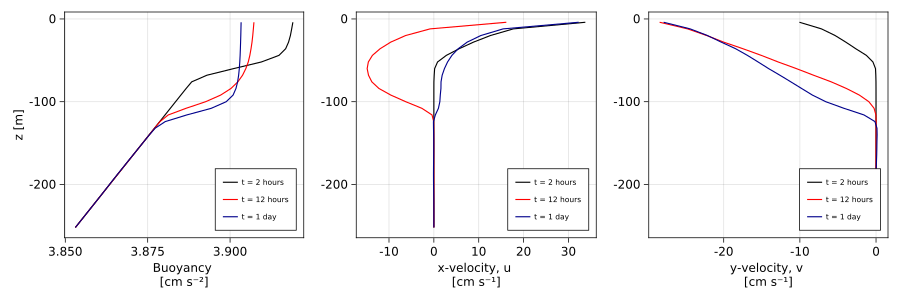
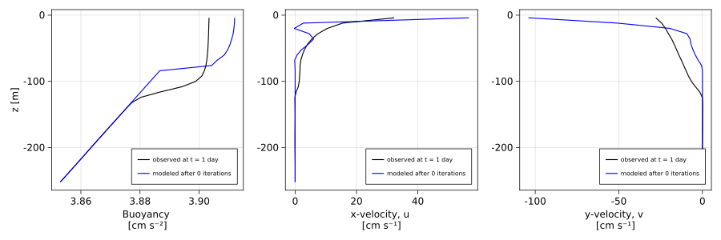
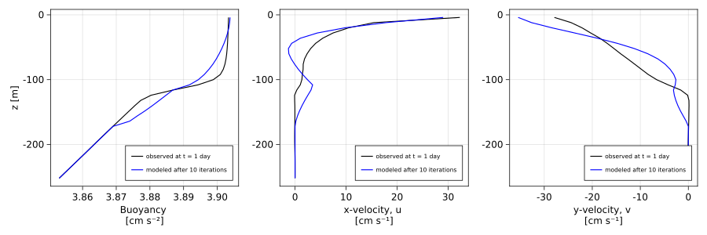
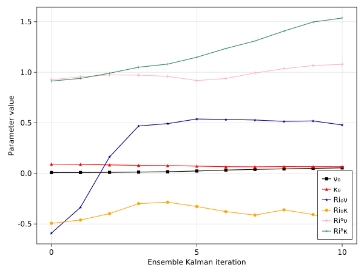

Calibration of RiBasedVerticalDiffusivity to one LESbrary simulation
Install dependencies
using Pkg
pkg"add ParameterEstimocean, Oceananigans, CairoMakie"using Oceananigans
using Oceananigans.Units
using ParameterEstimocean
using LinearAlgebra, CairoMakie, DataDeps, Distributions
using Oceananigans.TurbulenceClosures: RiBasedVerticalDiffusivityUsing LESbrary data
ParameterEstimocean.jl provides paths to synthetic observations derived from high-fidelity large eddy simulations. In this example, we illustrate calibration of a turbulence parameterization to one of these simulations:
datapath = datadep"two_day_suite_1m/strong_wind_instantaneous_statistics.jld2"
times = [2hours, 12hours, 24hours]
field_names = (:b, :u, :v)
transformation = ZScore()
regrid = (1, 1, 32)
observations = SyntheticObservations(datapath; field_names, times, transformation, regrid)SyntheticObservations with fields (:b, :v, :u)
├── times: [2 hrs, 12 hrs, 1 d]
├── grid: 1×1×32 RectilinearGrid{Float64, Oceananigans.Grids.Periodic, Oceananigans.Grids.Periodic, Oceananigans.Grids.Bounded} on Oceananigans.Architectures.CPU with 3×3×3 halo
├── path: "/home/runner/.julia/datadeps/two_day_suite_1m/strong_wind_instantaneous_statistics.jld2"
├── metadata: (:parameters, :grid, :coriolis, :buoyancy, :closure)
└── transformation: Dict{Symbol, ParameterEstimocean.Transformations.Transformation{TimeIndices{UnitRange{Int64}}, Nothing, ZScore{Float64}}} with 3 entriesLet's take a look at the observations. We define a few plotting utilities along the way to use later in the example:
colorcycle = [:black, :red, :darkblue, :orange, :pink1, :seagreen, :magenta2]
markercycle = [:rect, :utriangle, :star5, :circle, :cross, :+, :pentagon]
function make_figure_axes()
fig = Figure(resolution=(1200, 400))
ax_b = Axis(fig[1, 1], xlabel = "Buoyancy \n[cm s⁻²]", ylabel = "z [m]")
ax_u = Axis(fig[1, 2], xlabel = "x-velocity, u \n[cm s⁻¹]")
ax_v = Axis(fig[1, 3], xlabel = "y-velocity, v \n[cm s⁻¹]")
return fig, (ax_b, ax_u, ax_v)
end
function plot_fields!(axs, b, u, v, label, color)
z = znodes(Center, b.grid)
# Note unit conversions below, eg m s⁻² -> cm s⁻²:
lines!(axs[1], 1e2 * interior(b, 1, 1, :), z; color, label)
lines!(axs[2], 1e2 * interior(u, 1, 1, :), z; color, label)
lines!(axs[3], 1e2 * interior(v, 1, 1, :), z; color, label)
return nothing
endplot_fields! (generic function with 1 method)And then plot the evolution of the observed fields,
fig, axs = make_figure_axes()
for (i, t) in enumerate(times)
fields = map(name -> observations.field_time_serieses[name][i], field_names)
plot_fields!(axs, fields..., "t = " * prettytime(t), colorcycle[i])
end
[axislegend(ax, position=:rb, merge=true, labelsize=10) for ax in axs]
Behold, boundary layer turbulence!
Calibration
Next, we build a simulation of an ensemble of column models to calibrate the closure using Ensemble Kalman Inversion. We configure the closure without convective adjustment and with constant (rather than Richardson-number-dependent) diffusivity parameters.
ri_based_closure = RiBasedVerticalDiffusivity()
simulation = ensemble_column_model_simulation(observations;
Nensemble = 60,
architecture = CPU(),
tracers = (:b, :e),
closure = ri_based_closure)Simulation of HydrostaticFreeSurfaceModel{CPU, RectilinearGrid}(time = 0 seconds, iteration = 0)
├── Next time step: 1 second
├── Elapsed wall time: 0 seconds
├── Wall time per iteration: NaN years
├── Stop time: 1 day
├── Stop iteration : Inf
├── Wall time limit: Inf
├── Callbacks: OrderedDict with 4 entries:
│ ├── stop_time_exceeded => Callback of stop_time_exceeded on IterationInterval(1)
│ ├── stop_iteration_exceeded => Callback of stop_iteration_exceeded on IterationInterval(1)
│ ├── wall_time_limit_exceeded => Callback of wall_time_limit_exceeded on IterationInterval(1)
│ └── nan_checker => Callback of NaNChecker for u on IterationInterval(100)
├── Output writers: OrderedDict with no entries
└── Diagnostics: OrderedDict with no entriesThe simulation is initialized with neutral boundary conditions and a default time-step, which we modify for our particular problem:
Qᵘ = simulation.model.velocities.u.boundary_conditions.top.condition
Qᵇ = simulation.model.tracers.b.boundary_conditions.top.condition
N² = simulation.model.tracers.b.boundary_conditions.bottom.condition
simulation.Δt = 20minutes
Qᵘ .= observations.metadata.parameters.momentum_flux
Qᵇ .= observations.metadata.parameters.buoyancy_flux
N² .= observations.metadata.parameters.N²_deep60×1 Matrix{Float64}:
2.0e-6
2.0e-6
2.0e-6
2.0e-6
2.0e-6
2.0e-6
2.0e-6
2.0e-6
2.0e-6
2.0e-6
⋮
2.0e-6
2.0e-6
2.0e-6
2.0e-6
2.0e-6
2.0e-6
2.0e-6
2.0e-6
2.0e-6We identify a subset of the closure parameters to calibrate by specifying parameter names and prior distributions:
priors = (ν₀ = lognormal(mean=0.01, std=0.005),
κ₀ = lognormal(mean=0.1, std=0.05),
Ri₀ν = Normal(-0.5, 1.0),
Ri₀κ = Normal(-0.5, 1.0),
Riᵟν = lognormal(mean=1.0, std=0.5),
Riᵟκ = lognormal(mean=1.0, std=0.5))
free_parameters = FreeParameters(priors)FreeParameters with 6 parameters
├── names: (:ν₀, :κ₀, :Ri₀ν, :Ri₀κ, :Riᵟν, :Riᵟκ)
└── priors: Dict{Symbol, Any}
├── ν₀ => LogNormal{Float64}(μ=-4.716741961645196, σ=0.47238072707743883)
├── κ₀ => LogNormal{Float64}(μ=-2.4141568686511503, σ=0.47238072707743883)
├── Ri₀ν => Normal{Float64}(μ=-0.5, σ=1.0)
├── Ri₀κ => Normal{Float64}(μ=-0.5, σ=1.0)
├── Riᵟν => LogNormal{Float64}(μ=-0.11157177565710488, σ=0.47238072707743883)
└── Riᵟκ => LogNormal{Float64}(μ=-0.11157177565710488, σ=0.47238072707743883)TODO: explain the meaning of each parameter The prior information comes from experience, prior calibration runs, and educated guesses.
calibration = InverseProblem(observations, simulation, free_parameters)InverseProblem{ConcatenatedOutputMap} with free parameters (:ν₀, :κ₀, :Ri₀ν, :Ri₀κ, :Riᵟν, :Riᵟκ)
├── observations: SyntheticObservations of (:b, :v, :u) on 1×1×32 RectilinearGrid{Float64, Oceananigans.Grids.Periodic, Oceananigans.Grids.Periodic, Oceananigans.Grids.Bounded} on Oceananigans.Architectures.CPU with 3×3×3 halo
├── simulation: Simulation on 60×1×32 RectilinearGrid{Float64, Oceananigans.Grids.Flat, Oceananigans.Grids.Flat, Oceananigans.Grids.Bounded} on Oceananigans.Architectures.CPU with 0×0×3 halo with Δt=1200.0
├── free_parameters: (:ν₀, :κ₀, :Ri₀ν, :Ri₀κ, :Riᵟν, :Riᵟκ)
└── output map: ConcatenatedOutputMapNext, we calibrate, using a relatively large noise to reflect our uncertainty about how close the observations and model can really get,
eki = EnsembleKalmanInversion(calibration; pseudo_stepping=ConstantConvergence(0.8))
iterate!(eki; iterations = 10)
@show eki.iteration_summaries[end]IterationSummary(iteration=10, pseudotime=1.00792, pseudo_Δt=0.213522) for 60 particles and 6 parameters
ν₀ | κ₀ | Ri₀ν | Ri₀κ | Riᵟν | Riᵟκ |
ensemble_mean: 5.453e-02 | 6.593e-02 | 4.788e-01 | -4.911e-01 | 1.078e+00 | 1.536e+00 |
best particle: 9.270e-02 | 1.068e-01 | -3.707e-01 | -4.770e-01 | 8.375e-01 | 9.887e-01 | error = 6.764564e-02
worst particle: 3.509e-02 | 9.367e-02 | 6.884e-01 | -1.073e+00 | 1.057e+00 | 1.835e+00 | error = 1.922120e-01
minimum: 3.509e-02 | 2.761e-02 | -1.229e+00 | -2.310e+00 | 3.096e-01 | 7.262e-01 |
maximum: 1.574e-01 | 1.517e-01 | 2.779e+00 | 1.193e+00 | 2.716e+00 | 4.334e+00 |
ensemble_variance: 1.365e-03 | 3.330e-03 | 8.941e-01 | 8.317e-01 | 8.593e-03 | 4.229e-01 | Results
To analyze the results, we build a new simulation with just one ensemble member to evaluate some utilities for analyzing the results:
Nt = length(observations.times)
Niter = length(eki.iteration_summaries) - 1
modeled_time_serieses = calibration.time_series_collector.field_time_serieses
observed = map(name -> observations.field_time_serieses[name][Nt], field_names)
modeled = map(name -> modeled_time_serieses[name][Nt], field_names)
function compare_model_observations(model_label="modeled")
fig, axs = make_figure_axes()
plot_fields!(axs, observed..., "observed at t = " * prettytime(times[end]), :black)
plot_fields!(axs, modeled..., model_label, :blue)
[axislegend(ax, position=:rb, merge=true, labelsize=10) for ax in axs]
return fig
endcompare_model_observations (generic function with 2 methods)Now we execute forward runs for the initial ensemble mean,
initial_parameters = eki.iteration_summaries[0].ensemble_mean
forward_run!(calibration, initial_parameters)
fig = compare_model_observations("modeled after 0 iterations")[ Info: Initializing simulation...
[ Info: ... simulation initialization complete (753.695 μs)
[ Info: Executing initial time step...
[ Info: ... initial time step complete (3.057 ms).
[ Info: Simulation is stopping. Model time 1 day has hit or exceeded simulation stop time 1 day.
and the final ensemble mean, representing our "best" parameter set,
best_parameters = eki.iteration_summaries[end].ensemble_mean
forward_run!(calibration, best_parameters)
fig = compare_model_observations("modeled after $Niter iterations")[ Info: Initializing simulation...
[ Info: ... simulation initialization complete (765.495 μs)
[ Info: Executing initial time step...
[ Info: ... initial time step complete (3.195 ms).
[ Info: Simulation is stopping. Model time 1 day has hit or exceeded simulation stop time 1 day.
Parameter evolution
To understand how results changed over the EKI iterations, we look at the evolution of the ensemble means,
ensemble_means = NamedTuple(n => map(summary -> summary.ensemble_mean[n], eki.iteration_summaries)
for n in calibration.free_parameters.names)
fig = Figure()
ax = Axis(fig[1, 1], xlabel = "Ensemble Kalman iteration", ylabel = "Parameter value")
for (i, name) in enumerate(calibration.free_parameters.names)
label = string(name)
marker = markercycle[i]
color = colorcycle[i]
scatterlines!(ax, 0:Niter, parent(ensemble_means[name]); marker, color, label)
end
axislegend(ax, position=:rb)
This page was generated using Literate.jl.